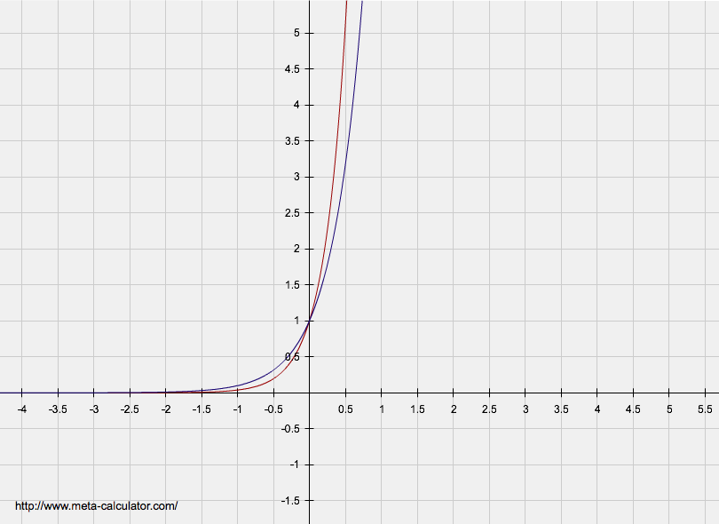
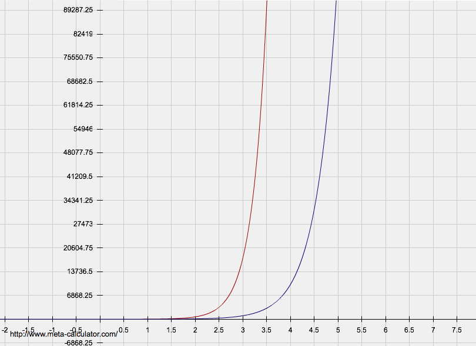

To calculate the optimal pattern given a population. I first looked at the possibilities and ranges of an all number pattern and an all letter pattern. This gives me two equations to look at y=10^x and y=26^x
 From there I notice that at any given value it can be represented by both a letter only and number only pattern. So given a number I figure out what integer value x would best fit for y=10^x and y=26^x. From there I would use those two values as the bounds for the possible length of my pattern and iterated through the combinations in between, calculating and saving the most optimal solution(lowest excess number of plates).